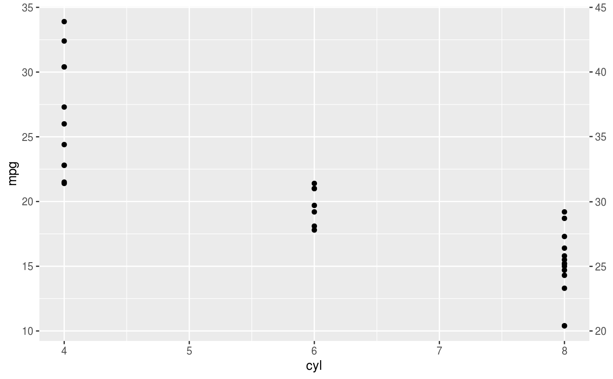
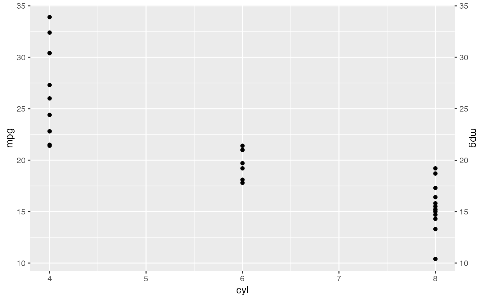
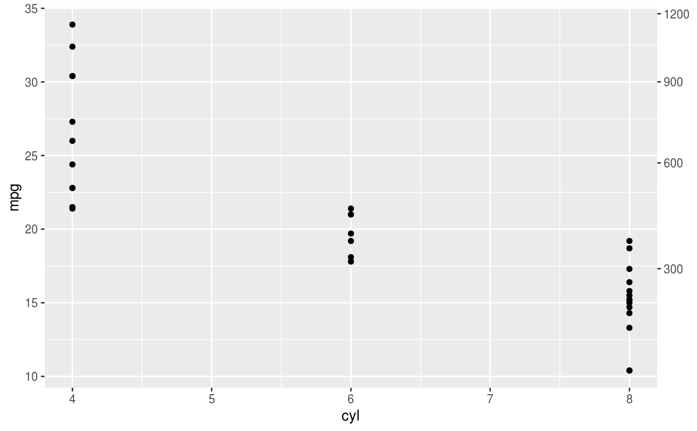
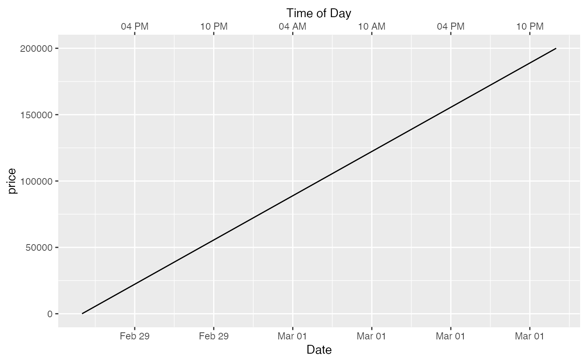
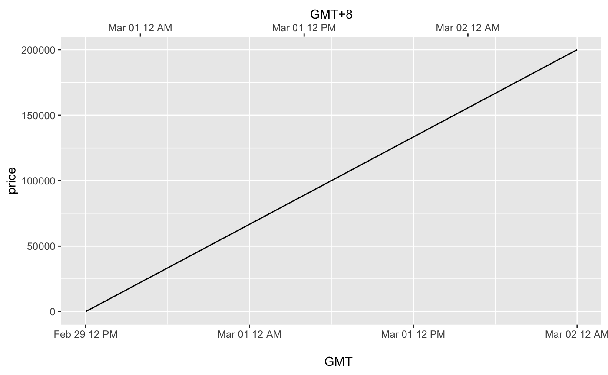
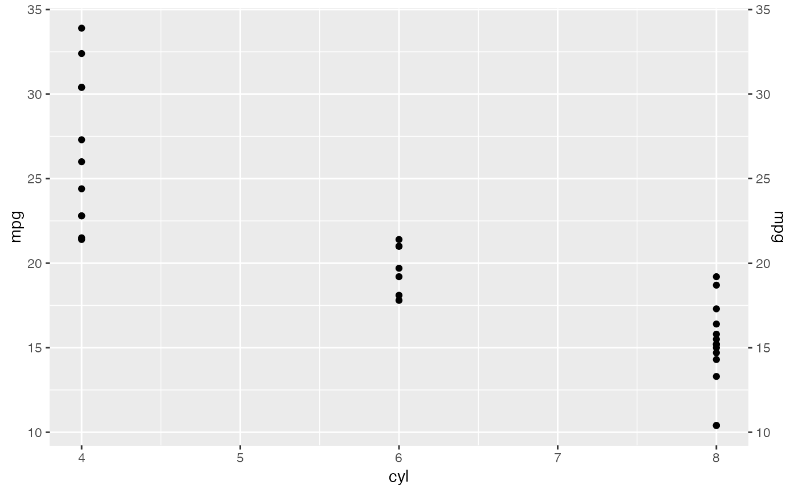
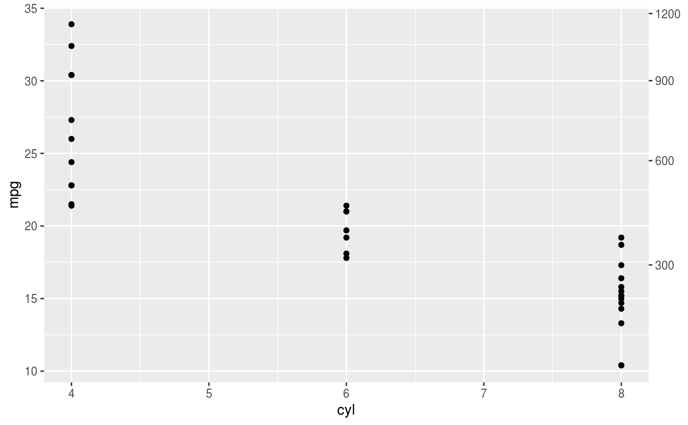
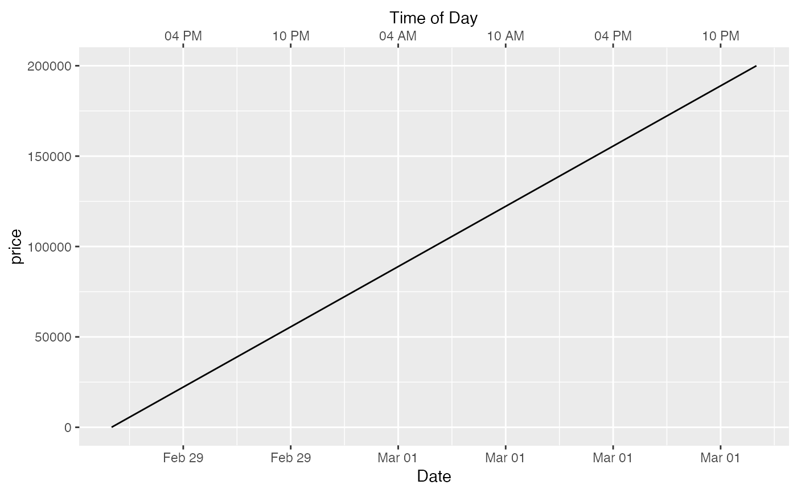
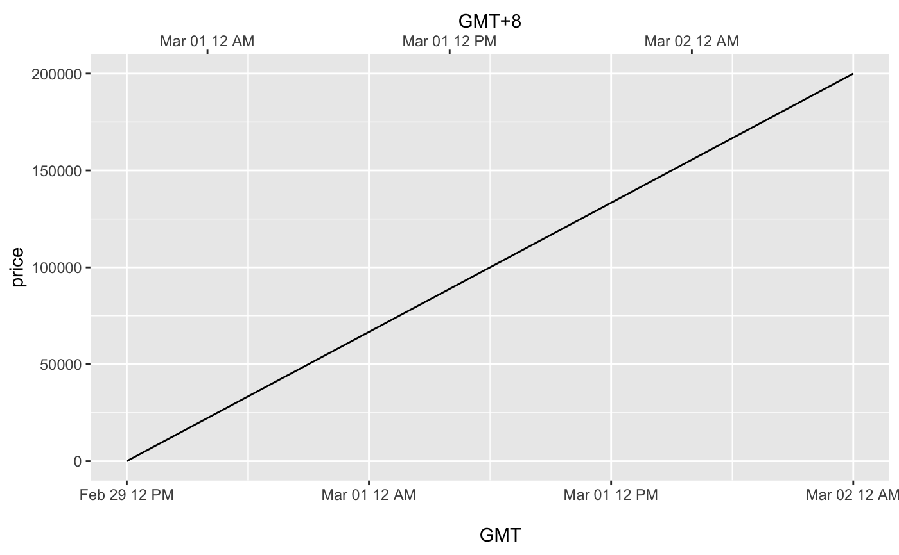

This function is used in conjunction with a position scale to create a secondary axis, positioned opposite of the primary axis. All secondary axes must be based on a one-to-one transformation of the primary axes.
Arguments
- transform
A formula or function of a strictly monotonic transformation
- name
The name of the secondary axis
- breaks
One of:
NULLfor no breakswaiver()for the default breaks computed by the transformation objectA numeric vector of positions
A function that takes the limits as input and returns breaks as output
- labels
One of:
NULLfor no labelswaiver()for the default labels computed by the transformation objectA character vector giving labels (must be same length as
breaks)A function that takes the breaks as input and returns labels as output
- guide
A position guide that will be used to render the axis on the plot. Usually this is
guide_axis().- trans
![[Deprecated]](figures/lifecycle-deprecated.svg)
Details
sec_axis() is used to create the specifications for a secondary axis.
Except for the trans argument any of the arguments can be set to
derive() which would result in the secondary axis inheriting the
settings from the primary axis.
dup_axis() is provide as a shorthand for creating a secondary axis that
is a duplication of the primary axis, effectively mirroring the primary axis.
As of v3.1, date and datetime scales have limited secondary axis capabilities.
Unlike other continuous scales, secondary axis transformations for date and datetime scales
must respect their primary POSIX data structure.
This means they may only be transformed via addition or subtraction, e.g.
~ . + hms::hms(days = 8), or
~ . - 8*60*60. Nonlinear transformations will return an error.
To produce a time-since-event secondary axis in this context, users
may consider adapting secondary axis labels.
Examples
p <- ggplot(mtcars, aes(cyl, mpg)) +
geom_point()
# Create a simple secondary axis
p + scale_y_continuous(sec.axis = sec_axis(~ . + 10))

# Inherit the name from the primary axis
p + scale_y_continuous("Miles/gallon", sec.axis = sec_axis(~ . + 10, name = derive()))
 # Duplicate the primary axis
p + scale_y_continuous(sec.axis = dup_axis())

# You can pass in a formula as a shorthand
p + scale_y_continuous(sec.axis = ~ .^2)

# Secondary axes work for date and datetime scales too:
df <- data.frame(
dx = seq(
as.POSIXct("2012-02-29 12:00:00", tz = "UTC"),
length.out = 10,
by = "4 hour"
),
price = seq(20, 200000, length.out = 10)
)
# This may useful for labelling different time scales in the same plot
ggplot(df, aes(x = dx, y = price)) +
geom_line() +
scale_x_datetime(
"Date",
date_labels = "%b %d",
date_breaks = "6 hour",
sec.axis = dup_axis(
name = "Time of Day",
labels = scales::label_time("%I %p")
)
)

# or to transform axes for different timezones
ggplot(df, aes(x = dx, y = price)) +
geom_line() +
scale_x_datetime("
GMT",
date_labels = "%b %d %I %p",
sec.axis = sec_axis(
~ . + 8 * 3600,
name = "GMT+8",
labels = scales::label_time("%b %d %I %p")
)
)

# Duplicate the primary axis
p + scale_y_continuous(sec.axis = dup_axis())

# You can pass in a formula as a shorthand
p + scale_y_continuous(sec.axis = ~ .^2)

# Secondary axes work for date and datetime scales too:
df <- data.frame(
dx = seq(
as.POSIXct("2012-02-29 12:00:00", tz = "UTC"),
length.out = 10,
by = "4 hour"
),
price = seq(20, 200000, length.out = 10)
)
# This may useful for labelling different time scales in the same plot
ggplot(df, aes(x = dx, y = price)) +
geom_line() +
scale_x_datetime(
"Date",
date_labels = "%b %d",
date_breaks = "6 hour",
sec.axis = dup_axis(
name = "Time of Day",
labels = scales::label_time("%I %p")
)
)

# or to transform axes for different timezones
ggplot(df, aes(x = dx, y = price)) +
geom_line() +
scale_x_datetime("
GMT",
date_labels = "%b %d %I %p",
sec.axis = sec_axis(
~ . + 8 * 3600,
name = "GMT+8",
labels = scales::label_time("%b %d %I %p")
)
)
